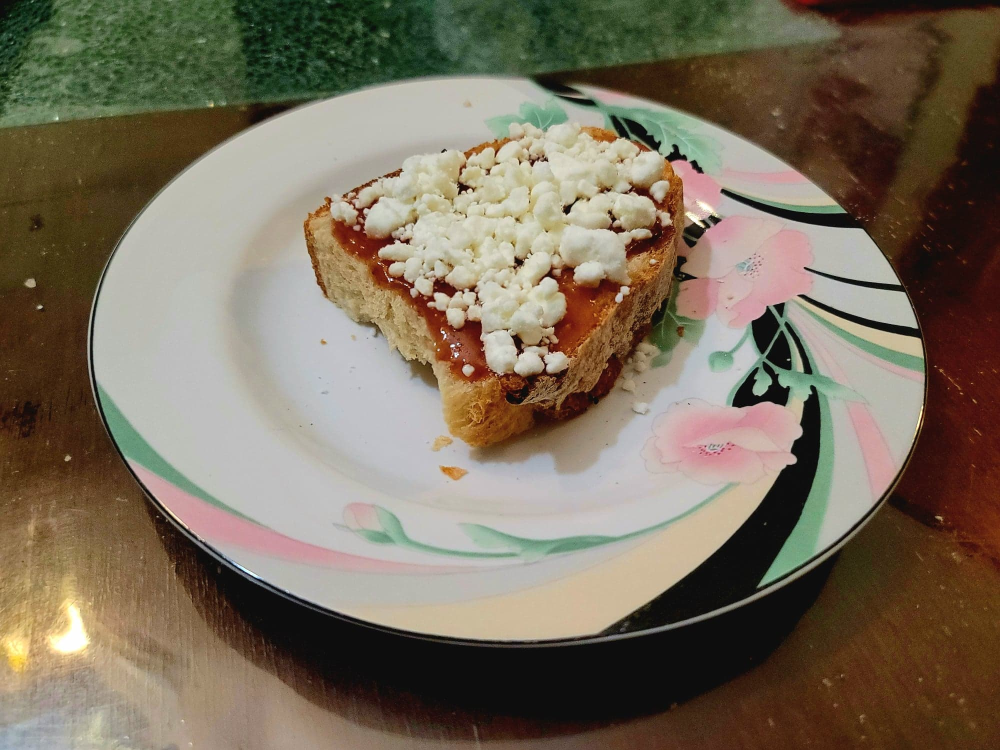

Fig and Goat Cheese Toast

Ingredients:
- Crusty bread slices
- Fig jam
- Crumbled goat cheese
- Optional: Figs, sliced
- Optional: Balsamic vinegar
Instructions:
- Toast the bread slices. Then top with a layer of fig jam, followed by a layer of goat cheese. Optionally top with some fig slices and/or a drizzle of balsamic vinegar. Serve immediately.